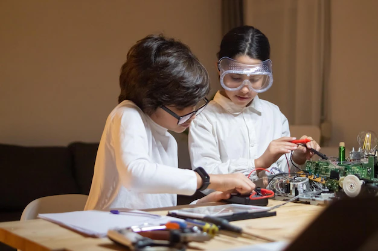
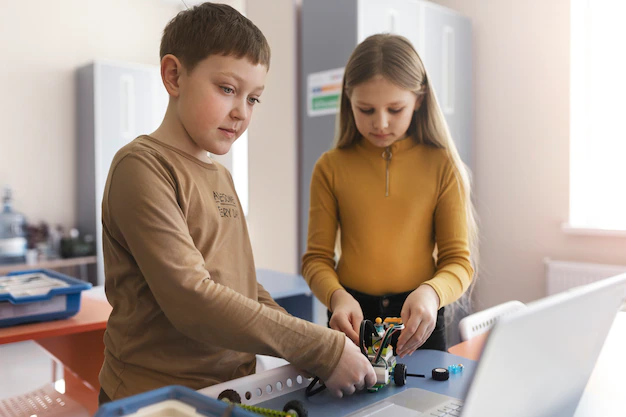
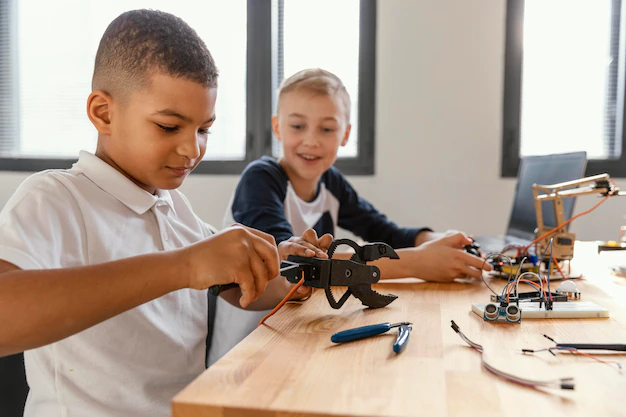
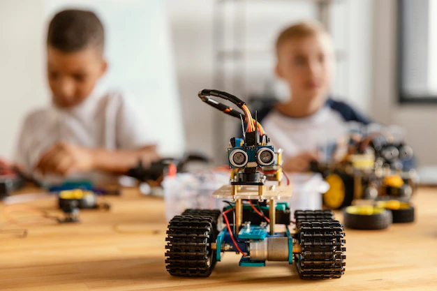
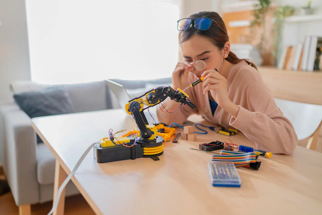
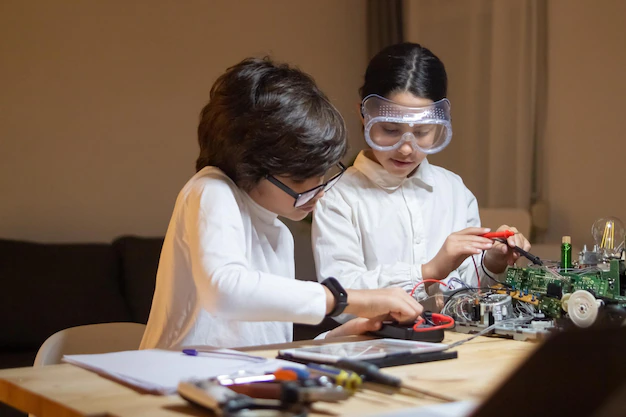
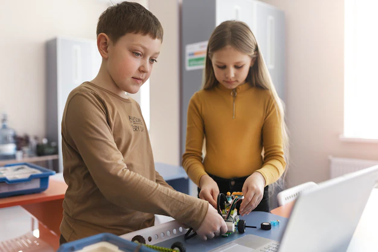
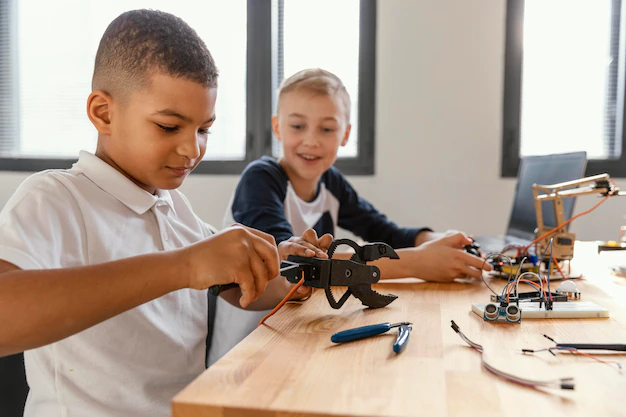
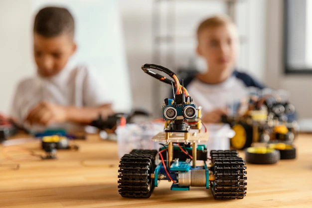
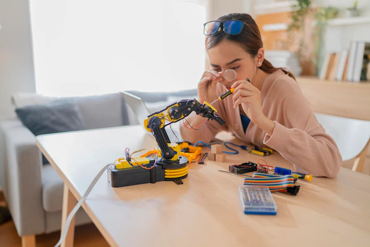

Samela Novaj
Predsednica
Pocetna / O nama
STEM edukacija na jednom mjestu okuplja projekte i resurse koji imaju za cilj da mladima pruže prilike za edukaciju i usavršavanje u oblastima nauke, tehnologije, inženjerstva i matematike. Ovdje ćeš pronaći informacije o školama programiranja za osnovce i srednjoškolce, onlajn kursevima programiranja, takmičenjima iz oblasti robotike, godišnjoj Olimpijadi znanja i mnogim drugim aktivnostima. Na portalu objavljujemo i nastavni materijal dostupan svima koji vole da samostalno uče i istražuju.
Prvi je da ćemo prilikom rada sa decom koristiti što viče egztaktnih matematičkih pojmova. Prilikom vežbi isticaćemo eci matematičke oblike u svetu koji nas oružuje, prebrojavaćemo prebrojive pojmove svaki dan, raspoređivaćemo oblike po veličini.
Drugi aspekt je da ćemo zajedno sa decom obratiti posebnu pažnju na pojave u svetu oko nas. Isticaćemo deci da obrate pažn ju u svakoj aktiovnosti na ono što vide, osete, okuse ili čuju.
Treće aspekt je da ćemo deci postavljati otvorena pitanja, na koja nećemo očekivati konačne i jdnoznačne odgovore. Kroz pitanja ce savladati i sustinu govora i postati opustenija u razgovoru sa odraslim. decu treba navici na takvo nesto
Predsednica

Vaspitac

Matematicar

Inzenjer

Hemicar

Vaspitac
Vaspitač će pratiti dete u aktivnosti, a ne obratno. STEM je istraživanje, kao rezultat istraživanja deca trebaju da donose samostalne zaključke, postavljaju hipoteze, donose pogređne zaključke i uče da ih kritičkim razmatranjem ili novim saznanjem menjaju. Time se postiže fleksibilnost u budućem razvoju i veći stepšen samopouzdanja, gubi se strah od pogrešnih odgovora.
 








